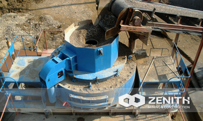

- 
VSI Sand Making Machine
In the artificial sand industry, to produce the ideal mechanism sand and concrete aggregate products; in stone shaping field, to obtain high quality, grain shape, good gravel products; Zenith VSI series high efficiency vertical shaft impact crusher is a good choice. The VSI sand making machine is specially designed for highway, hydroelectric dam construction, high-rise buildings, municipal, concrete mixing stations to provide quality sand and gravel aggregate, is the preferred equipment in the artificial sand field.
Sand Making Machine Application
Our sand making machine has the characteristics of beautiful appearance, convenient operation, high efficiency and energy saving. Sand grain production in full compliance with national standards. It's widely used in many fields of mining, building materials, highway, bridge, coal, chemical industry, metallurgy, refractory material etc. , which usually used to broken limestone, shale, coal, gypsum and other hard brittle materials .
Two Types Of Sand making machine
Our company provides mainly two types of sand making machine: the VSI sand making machine, and the Deep Rotor VSI sand making machine.
VSI sand making machine adopting German technology as well as innovating the manufacture craft, every single index of VSI sand maker has achieved to world's leading common. Zenith's B Series VSI sand making machine incorporate 3 crushing types and it may be operated for 720 hours devoid of any stop. These days, Zenith's VSI sand creating machine has taken the location of hammer crusher, roller crusher, roller ball mill, etc. In a word, the Zenith's VSI crusher has turn out to be the mainstream equipment in sand making business enterprise.
B Series Deep Rotor VSI sand making machine is often a new generation and high successful product which introduces German technologies, and owns a particular quantity of independent patents home. It has proved that B Series deep rotor VSI sand making machine performs incredibly nicely as a rock crusher machine. Until now, Zenith's B Series deep rotor VSI sand making machine have been well received as a high-efficiency construction sand production machine for sale and rent.
Sand Making Machine working principle
- Stones enter the crusher by the vibrating feed and are divided to two components. Some enter the high speed spinning impellor by means of the distributor plus the accelerated speed might be a hundred times of the gravitational acceleration.
- Then the components are thrown out from three runners in the speed of 60-70m/s and effect the falling materials in the distributor.
- Then they come for the lining of the inner cavity and get bounced by the material liner for the upper finish with the whirling motion cavity.
- Then they transform the direction to move down. The materials cast in the impellor type a continuous material curtain. In this case, the supplies can knowledge two or a lot more occasions of impacting and grinding processes. The crushed supplies are discharged in the bottom hole.
- Forming a closed circuit with all the circulation screening system, the vibrating feeder can deal with the components as fine as 20 meshes inside 3 circulations.
- Within the complete crushing procedure, the materials hit each and every other without the need of touching the metal elements directly.
- They meet the material lining so as to decrease the pollution and prolong the service life in the machine. The sophisticated air flow in the whirling motion cavity can properly lessen the dust pollution.
What make the sand making machine so popular ?
- A simple low energy structure is simple and reasonable rational , self- strike -breakers , the use of ultra-low- cost ;
- With crushing , coarse grinding function , energy efficient , high crushing efficiency;
- Safe and reliable pollution tiny tight security device , high reliability ; vortex chamber internal flow from circulation , small dust pollution;
- Optimal shooting mouth and more fluid curve-shaped design reduce the resistance to the material flow, improving material pass-through capacity as well;
- Hydraulic openings device uses Japan imported parts, it is easy and quick to move upper lid, so the internal mechanical overhaul and replacement cost less labor effort;
- Durable and easy to install and diverse installation, mobile installation ; work , stone can form a protective bottom, body wear and durability;